Claude agent in Teams with graph memory
The company's assistant inside Microsoft Teams. Any employee can talk to it in a one-to-one chat or mention it in a group, and it answers with Claude by querying internal sources: the project management system, the index of the file share, the collected news, Airflow, Grafana, the Brazilian company registry and a memory of its own built from conversations and projects. In groups it decides by itself when it is worth joining the conversation, and it logs the requests that come up.
- 10MCP servers connected to the agent
- 93tools loaded on demand
- −41%context per answer with on-demand tool loading
- ~7 smedian response time
From chat to answer
MESSAGE
GROUP, NO MENTION

Messages arrive through the Bot Framework over an outbound tunnel, with no port open in the firewall. A gate validates the Microsoft token and the tenant and replies immediately, because Teams gives up waiting after about fifteen seconds and the agent may take longer, so it acknowledges the message, shows "typing" and sends the answer later as a proactive message. Before anything reaches the model, tax IDs are masked, and the history is stored already masked.
The agent runs Claude Code in non-interactive mode, with Sonnet answering. It receives a metaprompt with the house rules, an index of which tool to use for each kind of question and the rule to always cite the source with the file path; a chat context block with the participants, each person's department and the project linked to the group, with its lead, weekly status, repositories and folder; the thirty most recent messages; and any images pasted into the conversation, downloaded only for that call and deleted at the end.
In groups, without a mention, every message is stored, a ten-second window of silence gathers messages into a batch, and Haiku, without tools, decides whether to answer. If so, Sonnet answers once covering the whole batch; if not, the agent only marks the message as seen and records the reason. A message that mentions someone else is never answered, and a cap on triages per group per hour keeps the cost at cents.
Tools
There are ten MCP servers, all read-only except the request log: the file share index, the project management system, documents, sector news, Airflow, Grafana, tasks, the company registry, memory and one more internal source. Instead of putting the definitions of all 93 tools in the context, only their names go in, and the model loads each definition when it is about to use the tool. Memory stays loaded because it is the most used source. The change cut the average context per answer by 41%, and by 55% for answers that use no tool.
Memory
MEMORY

Memory is filled at night by Airflow DAGs and read through the memory tool. The formal pillar copies the project management system, with projects, people, clients, milestones, risks and indexed passages from each project's documents. The informal pillar turns conversations into episodes, minutes, decisions and pending items, and a third routine writes each project's weekly status. Both pillars meet in a FalkorDB graph linking project, person, episode and request, and a Teams group is linked to a project by command or automatically, when the chat name matches unambiguously.
Overnight, a judge evaluates each of the day's answers from the signals in the conversation itself, such as reactions, corrections or repeated questions, classifies it as correct, partial, missing data or wrong and names the cause. The most common cause is data that is in no source at all, which becomes a list of gaps for the team. A thumbs-down without a comment makes the agent ask once what was missing, and the answer goes to the judge. Changes to the agent are measured this way: the new search over the sector studies, for example, raised answer accuracy on them from 79% to 85%.
Security and data protection
Only the company's tenant and only the Teams channel get in, with a body size limit, a per-person hourly message limit and at most two concurrent model calls. Claude runs sandboxed, with no shell and no web access, read-only access to the server and writes only to its own folder, and secret files such as .env, keys, tokens and databases are denied in any folder, tested with nine kinds of decoy file. The agent uses a main account and backup accounts, and when one hits its limit the same question moves to the next. Everything the agent does is tracked in the LLMOps dashboard.
Technical sheet
Python with the Microsoft 365 Agents SDK and Claude Code in non-interactive mode, with Sonnet answering and Haiku triaging. It runs in Docker as an agent container plus a tunnel sidecar, with the image published to GHCR and updated by Watchtower. Messages, conversations, usage, triage, reactions, requests and configuration live in their own PostgreSQL schema, and memory in formal, informal and status schemas plus FalkorDB. About 4,800 lines of code with automated tests, and part of the configuration, such as texts and feature switches, changes without a deploy.
Python · Claude Code · MCP · Microsoft 365 Agents SDK · Bot Framework · PostgreSQL · FalkorDB · Apache Airflow · Docker · GHCR · Watchtower